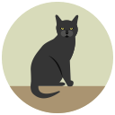
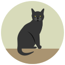

Два варианта отображения рисунка из списка миниатюр: автоматически, при клике на картинку.
-
Автоматическое изменение главного рисунка. Выделение активным классом миниатюры, которая отображается в главном блоке.
*заполнение списка миниатюр выполнено из массива при помощи Java Script
-
Изменение главного рисунка при клике на миниатюру в списке. Выделение активным классом миниатюры, которая отображается в главном блоке.
*заполнение списка миниатюр выполнено в HTML


 
